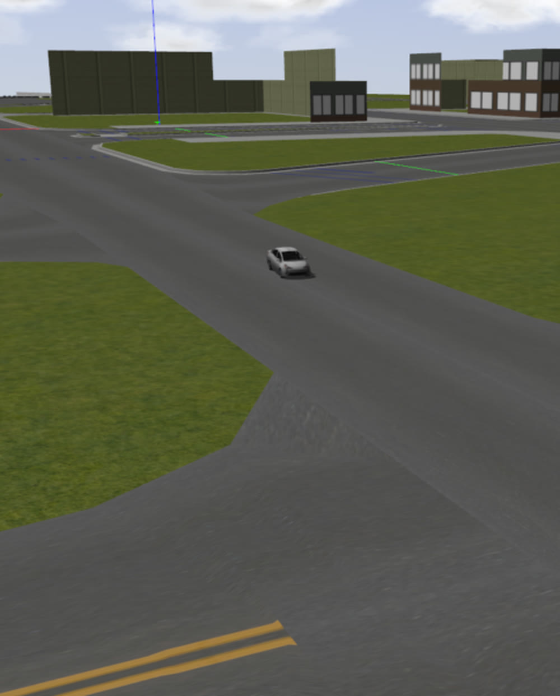
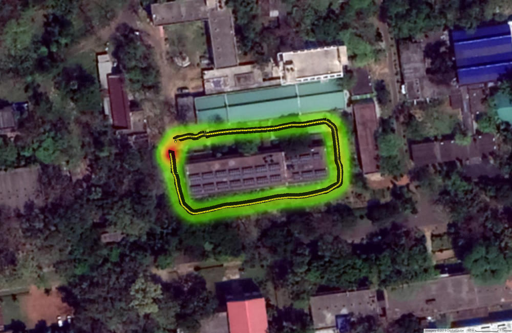

A production car, and roads nothing was trained for

Indian campus and city roads break the assumptions a driving stack is usually built on. Lane paint is intermittent where it exists at all, the road edge is often the only cue, and the traffic does not stay in lanes. On top of that the platform is a real car rather than a test rig: the actuation is drive-by-wire through an interface you did not design, the vehicle has mass and a turning circle, and every control error is a real one.
Building the stack the car needed

- A full autonomy stack on a Mahindra e2o with a factory drive-by-wire interface, covering perception, localization, planning and control, and driven on campus roads.
- Lateral and longitudinal control. PID and adaptive PID for velocity, and a sequence of lateral controllers built against a kinematic bicycle model, tuned in simulation before anything ran on the car. The comparison that came out of this is written up separately in Path trackers, compared honestly.
- Global and local planning as two layers: a Dijkstra global planner over the route, and a Time Elastic Band local planner that re-shapes the trajectory around whatever the sensors currently see, subject to the car's own dynamics.
- A GPS-tagged lane map of the test area, held in a tree structure for fast lookup during a live run. Nearby mapped lane geometry is projected back into the camera frame and fused with the live detection, so the estimate survives the stretches where the paint does not.
- Road feature extraction shared with the lane detection work: a bird's-eye perspective transform, lane fitting, and stop lines separated by orientation.
- Everything staged on a Clearpath Husky A200 first, with the heavy perception split across an onboard PC and an external machine over a static LAN, so modules were debugged on a platform that could not hurt anyone before they moved to a car that could.
Mahindra picked thirteen finalists out of more than 400 entrants for the Rise Prize Driverless Car Challenge and handed each an e2o to convert. The car drove autonomously on campus roads, and the controller study that came out of the programme became an arXiv preprint still used as a reference for tuning Ackermann path trackers.
What the campus taught us
- Staging everything on the Husky first. The e2o is a car, so a bad controller is not a bad log, it is a real vehicle moving badly. Debugging the stack on a small differential base with the same ROS interfaces meant the code that reached the car had already met real sensors, real latency and real network drops.
- The map is there to cover the detector, not to replace it. Fusing mapped lane geometry with live detection is what got the system through the stretches with no usable paint, and it degrades gracefully: where the map is wrong the detector still votes.
- Splitting planning into a fixed global route and a local planner that owns the vehicle's dynamics kept the hard constraint, that the path has to be drivable by this car, in one place instead of smeared across the stack.